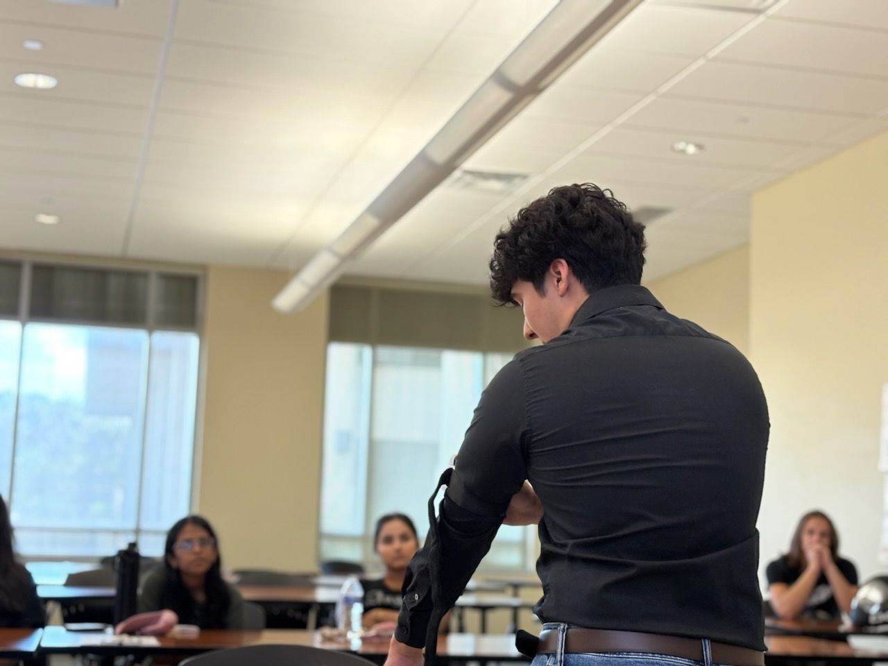
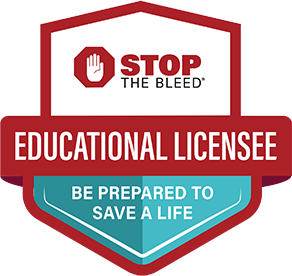
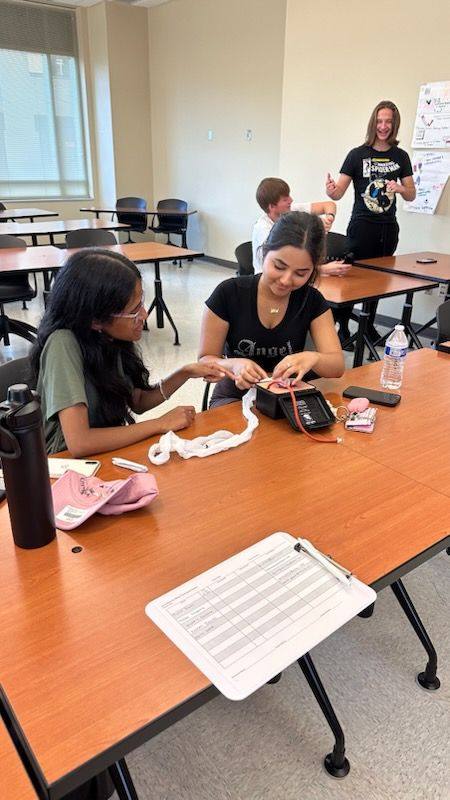
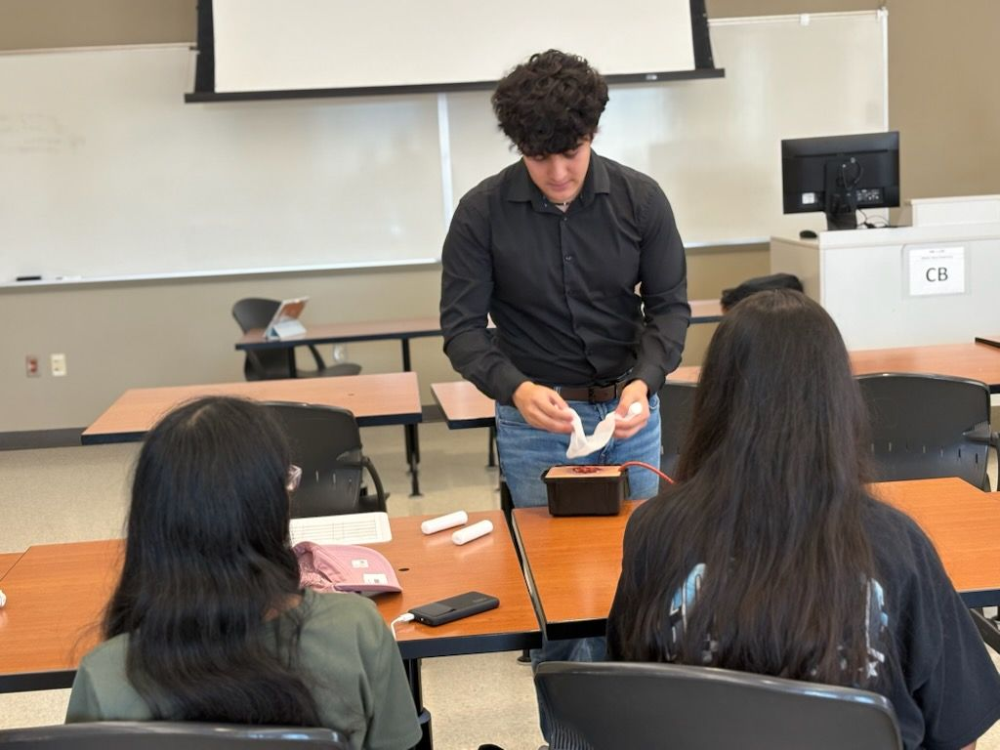

Cualquiera puede aprender a detener un sangrado.
Project BloodLine™ ofrece capacitación práctica y gratuita de STOP THE BLEED® (Detén el Sangrado) para estudiantes, personal y grupos comunitarios en todo San Antonio. En español o inglés.
Una persona puede morir por pérdida de sangre en tan solo cinco minutos, muchas veces antes de que llegue la ambulancia. Quien esté más cerca es quien responde primero.

Más de 175 personas capacitadas y certificadas desde septiembre de 2025.
La mayoría son estudiantes de UTSA. Todos aprobaron, y algunos regresaron para ayudar a enseñar la siguiente clase.
Antes y después de una clase
nunca había tomado un curso de STOP THE BLEED® antes del nuestro.
no tenía ni idea de dónde están los botiquines para control de sangrado en el campus de UTSA.
dijo que ayudaría aunque no hubiera nadie más alrededor. Antes de la clase era el 62%.
Qué aprenderás
Enseñamos el curso de la Stop the Bleed Coalition, basado en el ABC de STOP THE BLEED®. Practicarás en simuladores de heridas con torniquetes y gasas reales, para que la primera vez no sea con una persona de verdad.
-
Alerta
Llama al 911 y asegúrate de que el lugar sea seguro antes de acercarte. No puedes ayudar a nadie si tú también sales herido.
-
Busca el sangrado
Encuentra de dónde viene y reconoce cuándo pone en peligro la vida: sangre que sale a chorros, que forma un charco o que empapa la ropa.
-
Comprime
Detenlo. Presión directa y firme, rellenar la herida con gasa (o una camisa limpia si es lo único que tienes) y poner un torniquete en un brazo o una pierna.



Project BloodLine™ es licenciatario educativo oficial de STOP THE BLEED®, calificado para dar clases que cumplen con los estándares del Departamento de Defensa de EE. UU.
A cada clase le preguntamos qué le ayudó más
"¡Definitivamente la práctica con las manos!"
"Que se insistiera en nunca quitar un torniquete por tu cuenta."

"Nunca había usado un torniquete azul, solo uno de hule, así que aprender a usar los nuevos me sirvió."
"Qué hacer si el torniquete no funciona la primera vez."
"Aprender con una herida simulada que parece real."
"Lo que más me ayudó fue saber cómo y, sobre todo, cuándo atender a alguien."
"Creen más oportunidades para que los estudiantes aprendan esto."
Respuestas traducidas del inglés.

Lleva una clase a tu grupo
Es gratis. Mándanos un correo y acordamos una fecha. Nosotros llevamos a los instructores, los torniquetes y los simuladores de heridas.
Hasta ahora hemos capacitado sobre todo a estudiantes de UTSA, pero vamos a escuelas, iglesias, lugares de trabajo y centros comunitarios en todo San Antonio. Queremos llegar especialmente a comunidades hispanohablantes y rurales, donde estas clases casi nunca llegan.
Tu correo no tiene que ser formal. Ayuda incluir:
- Quiénes son como grupo
- Cuántas personas, más o menos
- Algunas fechas y horarios que les funcionen
- Dónde les gustaría hacerla
- Español o inglés
Escríbenos a
projectbloodlinesatx"Escribir el correo" abre tu app de correo con una plantilla corta ya lista.

Quiénes somos
Project BloodLine™ es una organización sin fines de lucro 501(c)(3) de San Antonio, fundada por un estudiante de UTSA. En la ciudad hay varias clases de STOP THE BLEED®, pero la mayoría cuestan, son solo para ciertos programas y se dan solo en inglés. Queremos llegar a donde ellas no llegan.
- Andre Aguirre Fundador y presidente de la junta directiva
- Instructor de STOP THE BLEED® certificado por la Stop the Bleed Coalition. Estudia biología y neurociencia en UTSA e investiga en UT Health San Antonio. Da la mayoría de nuestras clases.
- Dr. Kumarapperuma, PhD, MBA Miembro de la junta, investigación
- Director de investigación traslacional y científico en imagen molecular con más de 15 años de experiencia, y cofundador de Tychon Biosciences. Nos ayuda a que la capacitación se base en evidencia.
- Madison Butler Miembro de la junta, asuntos legales y cumplimiento
- Se encarga de nuestros trámites, del cumplimiento legal y de buena parte de la difusión.
Project BloodLine™ es socio oficial de la Campaña Nacional STOP THE BLEED® del Departamento de Defensa de EE. UU. y cuenta con licencias de uso educativo y de marca.
Más sobre nosotros